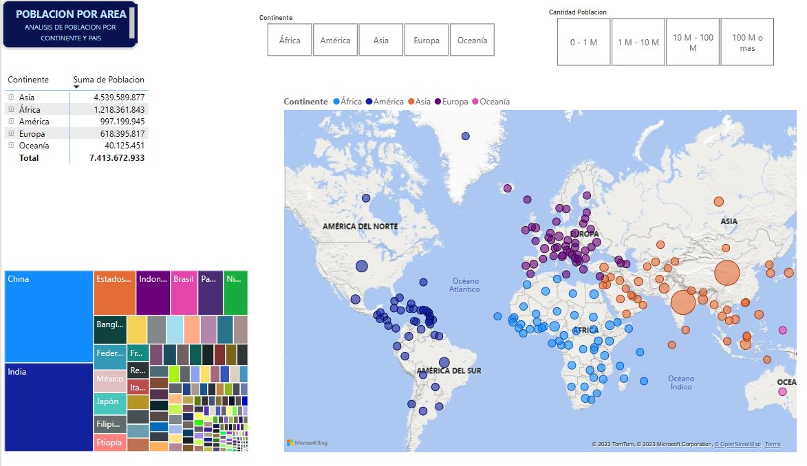
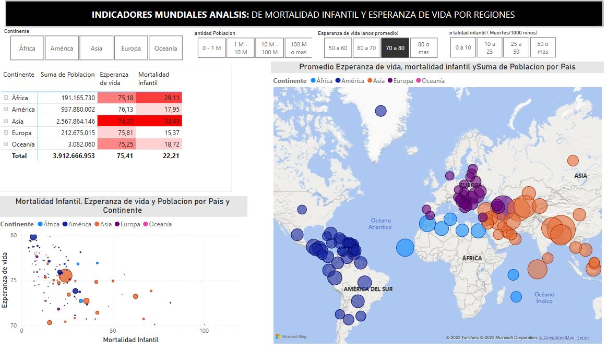

Contacto
Puedes contactarme a través de los siguientes medios:
- Email: stibenrapalog@gmail.com
- Teléfono: +504-89091504


En este proyecto, se busca realizar una integración de diversas fuentes de datos para resumir la información clave a través de mapas y gráficos en dos informes distintos. En el primer informe, se abordarán los indicadores de población por país y continente, mientras que en el segundo informe se trabajará en indicadores de esperanza de vida y mortalidad infantil. A partir de estos análisis, examinaremos varias categorías, como grupos de continentes, grupos de población, grupos de esperanza de vida, grupos de mortalidad infantil y la relación entre esperanza de vida y mortalidad infantil.
Power Bi
Poblacion por pais y continente
Indicadores mundiales de Esperanza de vida y Mortalidad Infantil
oooooooooo.
Puedes contactarme a través de los siguientes medios: